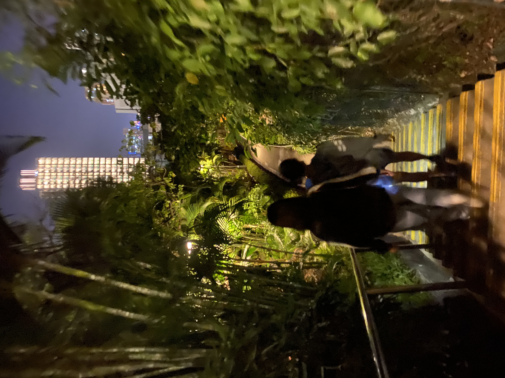

I am a Taiwanese girl who lives in Taipei, a northern city in Taiwan. Taipei the capital city of Taiwan, is a modern cosmopolitan metropolis with a lively and diversified face, filled with exuberance. The polarities of Taipei are vividly present as well in the joining of the urban and natural. The city owns plenty of trails, parks, and other oases of tranquility to lift and invigorate your spirits. Various night markets, Taipei 101, Yangmingshan National Park, temples, etc., there are many wonderful places to be your destination. Anyway, I hope everyone visits Taipei City once in their lifetime
I have two older sisters, Andrea is an actress and Amber is a teacher in kindergarten.
Kuma is my beloved dog; I love cuddling him his fluffy little body. He is now 5 years old and living in Taipei with my family.
SING STREET is my favorite movie, is a feel-good musical with huge heart and irresistible optimism, and its charmimg cast and hummable tunes help to elevate its familiar plotting.(Rotten tomatoes)
Visit Rotten Tomatoes
"Reading for me is the way I make my own reflection and relax myself to be free. I love reading non-fiction, something about people, relationship, history, autobiography, culture, and travel.
Comminication >>> JOURNALISM
I am studying at HKBU (HONG KONG BAPTIST UNIVERSITY) To be clear, Communication is a broad study for the first semester which means it is designed as an introduction to the subject. My priority would be Journalism, the one that allows me to fulfill my curiosity as well as be critical and sensitive to ongoing issues in the world.
Visit HKBU School of Communication
HKBU is located at Kowloon Tong, the nearby MTR station is Kowloon Tong station
I usually go to other places by the MTR since it's convenient to travel around and the MTR stations are almost everywhere.
Taking the double-decker bus is also one of the must experienced things in HK
A random photo of the sky taken by me:)
I joined the host family programme in HKBU, it's nice to have a family in HK that can take me visit the local places and have wonderful meals together! I appreciate it very much<3
The amazing food I had with my friends
HALL LIFEis also a big part of being a student in university, we have so many activities throuhgout the year
YP CAI
Happy Moon Festival
Go hiking with the Hall 鳳凰山:)
High Table Dinner
Here are some beautiful view I've found in Hong Kong
The hustle and bustl in Hong Kong is annoying, but I really enjoy the peace and tranquility at night. The city is so sophisticated, diverse and attractive.

The Central
Studying abroad was honestly a challenge for me at first, I was afraid of being alone and living without my family.
However, after realizing that learning how to live on my own is more than being lonely, I started to enjoy my life and make more friends with different background.
It's a big step and brave moment for me.
This is also a transformation of my mentality. Eventually, I am able to feel the sense of fulfillment and security from the bottom of my heart.
I really appreciate my family's support, everything I've chosen, and everyone I've met in my life.